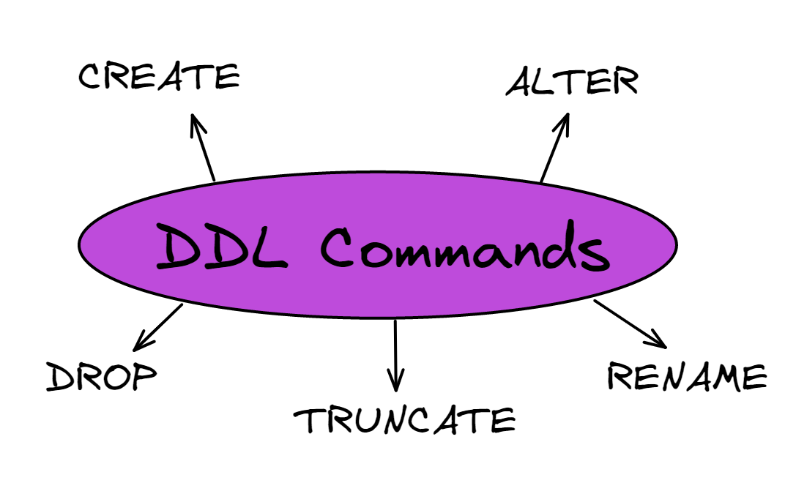
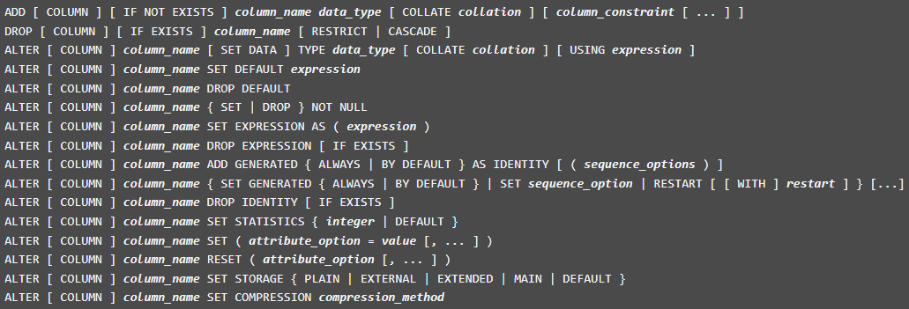
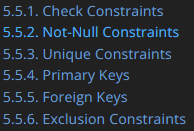
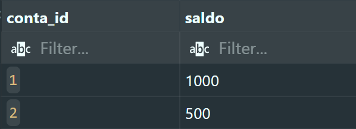
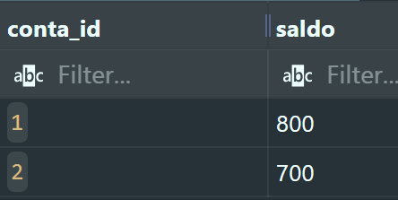
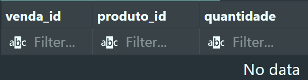
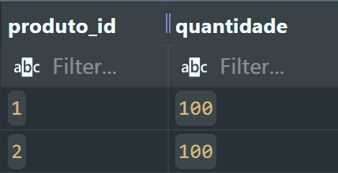
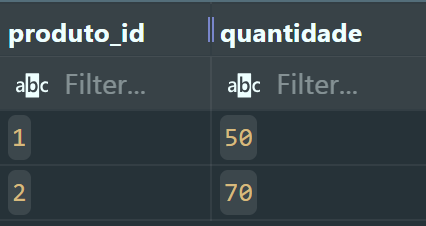
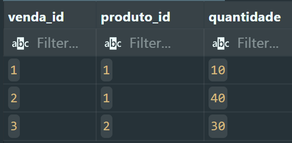

Contexto
Os comandos para definir dados DML

Banco de Dados
Tabela
Coluna de tabela
O que é possível de modificar em uma coluna?

E as chaves primária e estrangeira?
Como faço PK?
Como faço FK?
E que outras restrições é possível criar?
https://www.postgresql.org/docs/current/ddl-constraints.html

E que outras restrições é possível criar?
https://www.postgresql.org/docs/current/ddl-constraints.html

Unique Constraints
https://www.postgresql.org/docs/current/ddl-constraints.html
Age como se fosse a PK, você restringe que só pode ter um registro na tabela com aquele(s) valor(es)

Not-Null Constraints
https://www.postgresql.org/docs/current/ddl-constraints.html

Check Constraints
https://www.postgresql.org/docs/current/ddl-constraints.html

E que outras restrições é possível criar?
https://www.postgresql.org/docs/current/ddl-constraints.html

Exclusion Constraints (raríssimo)
https://www.postgresql.org/docs/current/ddl-constraints.html

Outras opções avançadas em colunas
Slide visual do material original.
DEFAULT
GENERATED
Limpando tabelas e reiniciando numeração
Opções de FK: o que fazer quando a PK for alterada ou apagada
TRIGGERS: gatilhos avançados
Trigger
Mantendo integridade ao transferir entre contas em um banco
Trigger por linha
O que essa trigger vai fazer?
Criando o banco de exemplo
Crie uma função tipo TRIGGER que vai realizar as operações
Crie uma função tipo TRIGGER que vai realizar as operações
O conteúdo da função é uma string, $$ é um delimitar alternativo para ‘.
Não dá conflito se tiver string com ‘ dentro da função com o $$
Ligue a TRIGGER na tabela de transferencia
Testando a TRIGGER

Testando a TRIGGER

Testando a TRIGGER

Venda e Estoque
Trigger para a consulta
Criando as tabelas
Criando a função trigger e associando ela à tabela de vendas
Criando a função trigger e associando ela à tabela de vendas
Testando
estoque
vendas


Testando
estoque
vendas


Prof. Caio Hamamura
Bons estudos!